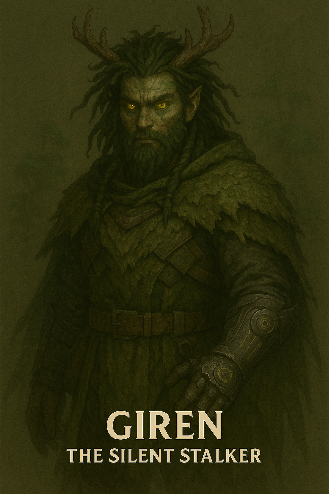

Giren

Name & Alias: Giren – The Tracker
Age / Race / Role: Unknown / Enhanced Beastkin / Predatory Scout, Sensor Disabler
Appearance: Beast-like humanoid with bone mask, fur-lined armor, and glowing nostrils that trace energy trails.
Affinities & Energy Types: Natural, Scent Tracking, Soundless Movement
Threat Tier: A-Rank
Core Stats (0–10):
• Power: 7
• Speed: 8
• Technique: 8
• Intelligence: 6
• Defense: 7
• Aura Control: 5
Signature Abilities:
• Hunter’s Echo
• Vein Scent Burst
• Bone Dart Scream
• Howl Mute Zone
• Pounce Latch Breaker
Personality Summary: Primitive and instinctual. Operates on scent, motion, and energy trails. Loyal only to his handler.
Faction or Allegiances: Ashborn Circle (Order of the Abyss)